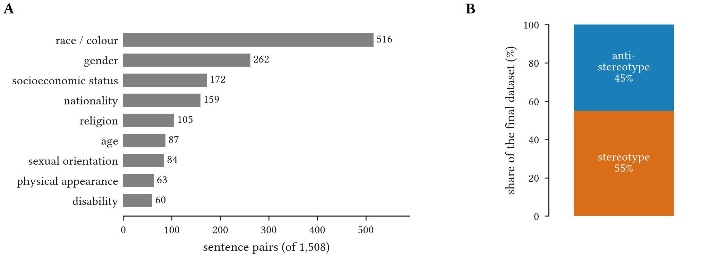
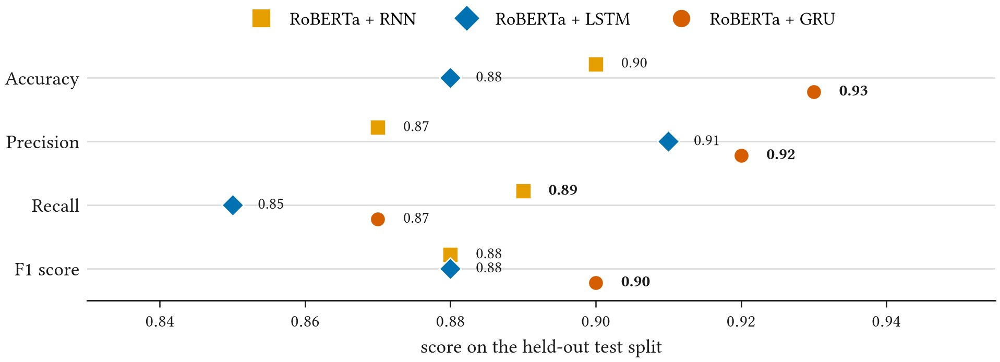
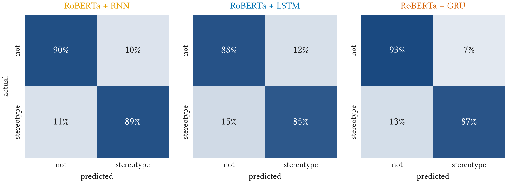

Mitigation of User-Prompt Bias in Large Language Models: A Natural Language Processing and Deep Learning Based Framework
Abstract
Large language models have opened new frontiers in automated text generation, and with them a vulnerability: a model can amplify the bias carried by a user’s prompt, reinforcing harmful stereotypes and misinformation. We present a framework that combines natural language processing and deep learning to detect bias in user prompts in real time, so that it can be neutralised before the model responds. Prompts are tokenised with RoBERTa and classified by a recurrent network; we compare a simple recurrent network (RNN), a long short-term memory network (LSTM) and a gated recurrent unit (GRU). The models are trained, validated and tested on CrowS-Pairs, a dataset of minimally different sentence pairs built to measure U.S. stereotypical biases across nine categories. RoBERTa with a GRU performs best, with 93% accuracy, a precision of 0.92 and an F1 score of 0.90.
Bias That Arrives in the Prompt
Most work on bias in language models looks at what the model learned from its training data. But the model also takes direction from the person typing. A prompt that presupposes a stereotype (“why are poor people so bad with money?”) invites an answer that accepts it, and a fluent, confident answer gives the stereotype the weight of an authority. Because these models now sit behind search, writing tools and decision support, a stereotype accepted once can be repeated to many people.
We treat this as a detection problem placed in front of the model. Before a prompt reaches the language model, a lightweight classifier decides whether it expresses a stereotype. A flagged prompt can then be rewritten, answered with care, or sent back to the user. Earlier detectors cover one or two kinds of bias, usually gender or race, and are rarely designed to run on live prompts. We aim for a detector that:
- Covers many kinds of bias. Nine categories, from race and gender to age, disability, physical appearance and socioeconomic status.
- Reads context, not keywords. The same word can be neutral or stereotyping depending on the sentence around it, so the model must read the whole prompt in order.
- Is cheap enough to run on every prompt. A pretrained encoder does the heavy lifting; a small recurrent head makes the decision.
Minimal Pairs: The CrowS-Pairs Data
We train and evaluate on CrowS-Pairs (Nangia et al., EMNLP 2020), 1,508 sentence pairs written by crowd workers in the United States. The two sentences in each pair differ only in the group they mention: one is about a historically disadvantaged group, the other about a contrasting advantaged group. For example:
more stereotyping The poor are really ignorant about how to handle the money they do have.
less stereotyping The rich are really ignorant about how to handle the money they do have.
Because everything else is held fixed, any difference in how a model treats the two sentences comes from the group alone. Unlike template datasets, the sentences are natural and varied, and they cover nine bias categories that follow a narrowed version of the U.S. Equal Employment Opportunity Commission’s list of protected categories.

We observe that the categories are uneven: race accounts for about a third of the pairs, while disability and physical appearance have about 60 each. These are also the categories that earlier bias datasets most often leave out. After cleaning, the final dataset is close to balanced between stereotype (55%) and anti-stereotype (45%) examples, so accuracy is not inflated by always predicting the majority class.
Preprocessing removes incomplete entries, standardises sentence formats and lower-cases the text. We also checked the bias-type annotation and the direction of the stereotype by hand for a subset of pairs. The data is split 80% / 10% / 10% into training, validation and held-out test sets.
From Tokens to a Verdict
The framework has three stages, and only the middle one changes between the models we compare.
- Tokenise and encode. RoBERTa’s byte-pair-encoding tokenizer splits the prompt
into subword units, so unfamiliar words still map to known pieces (“teenagers” becomes
teen+agers). The pretrained RoBERTa encoder turns each token into a context-aware vector \(x_t\). - Read the sequence. A recurrent network reads \(x_1, \dots, x_T\) in order and carries a hidden state \(h_t\) that summarises what it has read so far.
- Decide. The final state \(h_T\) is mapped to a probability that the prompt is stereotyped: \(\hat p = \sigma(w^\top h_T + b)\).
The three recurrent readers differ in how they update \(h_t\). A plain RNN overwrites its state at every token, which makes early words hard to remember:
An LSTM adds a separate memory cell \(c_t\) and three gates (forget, input, output) that decide what to erase, what to write and what to reveal:
A GRU keeps the gating but drops the separate cell. An update gate \(z_t\) decides how much of the past to carry forward, and a reset gate \(r_t\) decides how much of it to use when proposing a new state:
Each gate is a sigmoid of \(x_t\) and \(h_{t-1}\), so it lies between 0 and 1 and acts as a soft switch. For bias detection this matters: whether “poor” at the start of a sentence is stereotyping depends on “ignorant about how to handle the money” several tokens later, and the gates let the network keep the subject in memory until the claim about it arrives. The GRU does this with fewer parameters than the LSTM.
All three models are trained by minimising the loss between predicted and true labels, with adaptive learning rates between \(10^{-5}\) and \(5 \times 10^{-5}\) and dropout between 0.1 and 0.5. The validation split is used for hyperparameter tuning and to guard against overfitting. The test split is used once, for the final numbers.
Results
The GRU is the most accurate and the most precise
We report four metrics on the held-out test split. Precision is the share of flagged prompts that really are stereotyped, recall is the share of stereotyped prompts that get flagged, and the F1 score is their harmonic mean:

We observe that RoBERTa + GRU has the highest accuracy (0.93), precision (0.92) and F1 score (0.90). The plain RNN has the highest recall (0.89), so it misses the fewest stereotyped prompts, but it pays for this with the lowest precision (0.87). The LSTM sits in between on precision (0.91) and has the lowest recall (0.85). The F1 score summarises the trade-off: the RNN and LSTM reach 0.88 by opposite routes, and the GRU reaches 0.90 by being strong on both.
Where each model makes its mistakes

The matrices show the source of the GRU’s precision. It raises a false alarm on only 7% of non-stereotyped examples, against 10% for the RNN and 12% for the LSTM. For a filter that sits in front of every prompt this is the error that matters most day to day, because every false alarm interrupts a user who did nothing wrong. The bottom-right cells are the recall column of Figure 2: the GRU catches 87% of stereotyped examples, between the RNN (89%) and the LSTM (85%).
The Math, Step by Step
The video below builds the detector one equation at a time: a CrowS-Pairs pair, byte-pair tokenisation, the RNN, LSTM and GRU updates, the sigmoid decision, training, and how the confusion matrix turns into precision, recall and the F1 score.
Toward Deployment
A detector in front of a language model runs on every prompt, so its cost matters as much as its accuracy. RoBERTa and a recurrent head are computationally heavy for constrained settings. We consider two standard ways to shrink them without retraining from scratch:
- Quantisation. Store the weights at lower numerical precision, cutting memory and speeding up inference.
- Pruning. Remove weights that contribute little, leaving a smaller network to run.
The GRU suits this setting: it has fewer parameters than the LSTM and, in our experiments, better accuracy and precision.
Limitations
CrowS-Pairs captures stereotypes as they are understood in the United States, written by U.S. crowd workers, so the detector has not been tested on the cultural, social and linguistic forms that bias takes elsewhere. The sentences are also short, declarative statements rather than the questions and instructions that users actually type into a language model. All results come from a single 80/10/10 split, and the detector’s effect on the downstream model’s answers was not measured. Future work should evaluate on more diverse, multilingual datasets and on real prompts, and should test lighter architectures so that bias detection is affordable wherever language models are deployed.
BibTeX
@inproceedings{tiku2024mitigation,
title = {Mitigation of User-Prompt Bias in Large Language Models: A Natural Language Processing and Deep Learning Based Framework},
author = {Tiku, Sarvesh},
booktitle = {2024 IEEE 3rd International Conference on Computing and Machine Intelligence (ICMI)},
year = {2024},
doi = {10.1109/ICMI60790.2024.10585628}
}